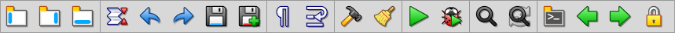
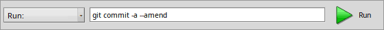

| Index |
|
The icons The Find bar The Replace bar The Console bar |
The Toolbar
At the top of the main window Genio has a toolbar to provide quick access by clicking its icons. It can be toggled on and off with the menu .

All icons are explained by a tooltip if you hover the mouse pointer over it. Let's go through them quickly anyway.
 The icons
The icons
|
|
Show or hide the projects, outline, or output pane, also with the menu items under . |
|
Fold or unfold all code blocks, also with menu . | |
|
Undo, also with menus , ALT Z. | |
|
Save the current file, also with menu , ALT S. | |
|
Show or hide spaces and tabs, also with menu . | |
|
Wrap or un-wrap lines that are longer than the editor view's width, also with menu . | |
|
|
Build the active project in the set , also with menu , ALT B. |
|
Run the built target, also with menu , ALT SHIFT R. | |
|
Show or hide the Find bar, also with menu , ALT F. | |
|
Show or hide the Console bar to execute commands. | |
|
|
Protect the current file from accidental changes. |
|
Switch to the previous file (the tab to the left), also with OPT ←. | |
|
|
Close the current file, also with menu , ALT W or a right-click on its tab. |
|
|
Show a menu with all open files, also available when clicking the widget at the right end of the tab bar. |
The Find bar
If there's text selected while hitting ALT F or clicking the 'Find' icon, it will be pre-filled in the 'Find' text field.
Previous search strings can be found in the pop-up menu.
The arrow icons will jump to the next/previous match, the keyboard shortcut is ALT ↓ / ↑.
| Continue the search at the beginning of the file when it has reached the end (and vice-versa, if you reverse the direction by jumping to the previous match). | |
| Does not find partial matches. | |
| Respect upper and lower-case. |
The marker icon creates bookmarks for all matching lines.
The last icon on the right will search through all files of the active project. Results are presented in the Search results tab of the output pane.
ESC closes the Find bar.
The Replace bar
If there's text selected while hitting ALT R or clicking the 'Replace' icon, it will be pre-filled in the 'Replace' text field.
Previous replace strings can be found in the pop-up menu.
The icons from left to right will , , and in the current file.
ESC closes the Replace bar.
The Console bar
Clicking the 'Run console program' icon in the toolbar, opens the Console bar:

The text field acts like a command prompt with the active project's top folder as working directory. You can execute any command and see the output in the Console I/O tab of the output pane.
Hitting TAB or ENTER or click to execute the entered command line.
Back: Panes Next: Menus